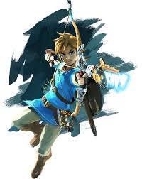
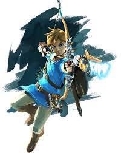
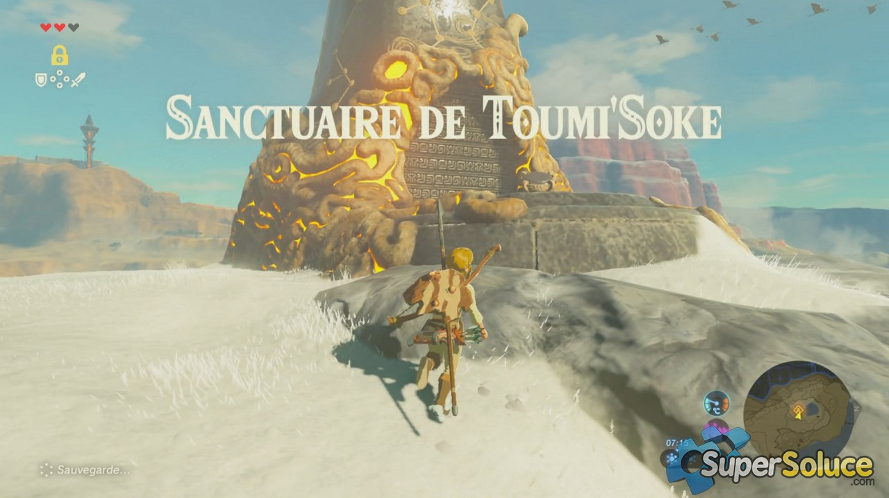

Link
Link est le héros principal de Breath of the Wild. Il se réveille amnésique après un long sommeil de 100 ans et doit sauver le royaume d'Hyrule en affrontant Ganon.
Link est le héros principal de Breath of the Wild. Il se réveille amnésique après un long sommeil de 100 ans et doit sauver le royaume d'Hyrule en affrontant Ganon.
Zelda est la princesse d'Hyrule, héritière du pouvoir divin. Dans ce jeu, elle lutte contre l'emprise de Ganon et cherche à protéger Hyrule.
.jpg)
Les Grands Prêtres sont des figures importantes qui aident Link dans sa quête, comme Impa ou les différents sages qui se trouvent dans les sanctuaires.
.jpg)
Les Grands Prêtres sont des figures importantes qui aident Link dans sa quête, comme Impa ou les différents sages qui se trouvent dans les sanctuaires.
.jpg)
Les sanctuaires sont des lieux mystiques qui apparaissent un peu partout dans Hyrule. Ils sont essentiels pour débloquer de nouvelles capacités et améliorer les pouvoirs de Link.
Le premier sanctuaire que Link découvre dans le jeu. Il contient une épreuve de puissance et permet à Link d'acquérir la tablette Sheikah.
.jpg)
Ce sanctuaire contient une épreuve de précision, avec des cibles à détruire. Il est situé dans les plaines d'Hyrule.
Les créatures divines sont des machines antiques qui ont été corrompues par Ganon. Link doit les récupérer pour aider à la défaite de Ganon.
Vah Medoh est la créature divine du vent, située dans les montagnes des Rito. Elle est contrôlée par la Reine Rito et doit être libérée pour affronter Ganon.

Vah Rudania est la créature divine du feu, située dans les montagnes volcaniques des Gorons. Elle doit être libérée afin de réduire la menace du Fléau de Ganon.

Vah Naboris est la créature divine de l'électricité, protégée par les Gerudo. Libérer cette créature est essentiel pour réduire la force de Ganon.

Vah Ruta est la créature divine de l'eau, gouvernée par les Zoras. Elle est libérée pour aider à affronter le Fléau de Ganon.